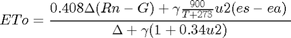
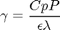
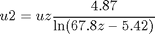
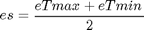
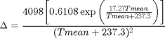
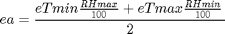
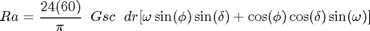
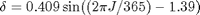

FAO56_ETO
Calculates daily reference evapotranspiration (ETo).
Contents
Syntax
[date,ETo] = FAO56ETo(weather, windheight, latitude , elevation)
[date,ETo] = FAO56_ETO (weather,windheight,latitude,elevation) calculates ETo using the 9 by n weather matrix (detailed below), height at which wind speed was measured, latitude in decimal degrees, and the elevation of the location. ETo can then be multiplied by a crop coefficient (Kc) for various crops to determine daily crop evapotranspiration (ETc).
Inputs
weather = [date doy Tmax Tmin P RHmax RHmin Rs wind (vpd)].
date = date in Matlab date number format.
doy = day of the year.
Tmax = maximum daily air temp (°C).
Tmin = minimum daily air temp (°C).
P = daily precip (mm).
RHmax = daily maximum relative humidity (%).
RHmin = daily minimum relative humidity (%).
Rs = incoming solar radiation (MJ/m2/day).
wind = wind speed (m/s).
vpd = daily average vapor pressure deficit (kPa) **if available**
windheight = height at which wind measurements were taken (m).
latitude = latitude of experimental site (decimal degrees).
elevation = elevation above sea level of experimental site (m).Outputs
date = Matlab date format.
ETo = Resulting reference evapotranspiration column vector (mm/day)References
Allen, R.G., L.S. Pereira, D. Raes, and M. Smith. 1998. Crop evapotranspiration: Guidelines for computing crop water requirements, FAO Irrigation and Drainage Paper No. 56.
Food and Agriculture Organization (FAO)
Updates
v.1 Created by ESK Jan. 9, 2008.
v.2 TEO Sept. 18, 2008 added option to input vpd if available.
v.3 TEO July 11, 2013 adding procedures to estimate missing weather
v.3 AP August 5, 2013 fixed indexing problem in actual vapor pressure (ea), and solar radiation (Rs).
Last revised on: 04-Dec-2013 12:50:50.
General equation for ETo
This equation corresponds to Eq.6, FAO-56.

ETo = reference evapotranspiration (mm/day)
Rn = net radiation at the crop surface (MJ/m2/day).
G = soil heat flux density (MJ/m2/day)
T = mean daily air temperature at 2 m height
u2 = wind speed at 2 m height (m/s)
es = saturation vapor pressure (kPa)
ea = actual vapor pressure (kPa)
es-ea = saturation vapor pressure deficit (kPa)
= slope vapor pressure curve (kPa/°C)
= psychrometric constant (kPa/°C)
Psychrometric constant
This equation corresponds to Eq. 8, FAO-56.

= psychrometric constant (kPa/°C)
= latent heat of vaporization, 2.45 (MJ/kg)
Cp = specific heat at constant pressure (MJ/kg/°C)
= ratio of molecular weight of water vapour/dry air = 0.622
P = atmospheric pressure (kPa)
z = elevation above sea level (m)
Date Output
date = datevec(weather(:,1)); % Convert Date to Day Month Year Format for output date(:,4:6)=[]; z = elevation; P = 101.3*((293-.0065*z)/293)^5.26; Cp = 0.001013; % Approx. 0.001013 for average atmospheric conditions epsilon = 0.622; lamda = 2.45; gamma = (Cp*P)/(epsilon*lamda); % Approx. 0.000665
Wind speed
Wind speed must be corrected to 2 meter above the soil surface

u2 = wind speed at 2 m above ground surface (m/s)
uz = measured wind speed at z m above ground surface (m/s)
zm = height of measurement above ground surface (m)
zm = windheight; u2 = weather(:,9); u2 = u2*(4.87/log((67.8*zm)-5.42)); % Eq. 47, FAO-56 u2(isnan(u2)) = 2; %replace missing windspeed data with 2 m/s, p. 63 Allen et al. (1998)
Air temperature
Tmax = weather(:,3);
Tmin = weather(:,4);
Tmean = (Tmax + Tmin)/2; % Eq. 9, FAO-56
T = Tmean;
Air humidity
Mean saturation vapor pressure as defined in Eq. 12, FAO-56

es = mean saturation vapor pressure (kPa)
eTmax = saturation vapor pressure at temp Tmax (kPa)
eTmin = saturation vapor pressure at temp Tmin (kPa)
eTmax = 0.6108*exp(17.27*Tmax./(Tmax+237.3)); % Eq. 11, FAO-56
eTmin = 0.6108*exp(17.27*Tmin./(Tmin+237.3));
es = (eTmax + eTmin) / 2;
Vapor pressure
Slope of saturation of vapor pressure curve () as defined in Eq. 13, FAO-56

= slope of saturation vapor pressure curve at air temp T (kPa/°C)
Tmean = average daily air temperture
Actual vapor pressure derived from relative humidity data as defined in Eq. 17, FAO-56

ea = actual vapor pressure (kPa)
eTmax = saturation vapor pressure at temp Tmax (kPa)
eTmin = saturation vapor pressure at temp Tmin (kPa)
RHmax = maximum relative humidity (%)
RHmin = minimum relative humidity (%)
delta = 4098*(0.6108*exp(17.27*Tmean./(Tmean+237.3)))./(Tmean+237.3).^2; RHmax = weather(:,6); RHmin = weather(:,7); ea = (eTmin.*(RHmax./100) + eTmax.*(RHmin./100)) / 2; if size(weather,2)==10 ea = es-weather(:,10); end % Replace missing vapor pressure data with estimate based on minimum % temperature Eq. 48, FAO-56 ea(isnan(ea)) = 0.611*exp(17.27*Tmin(isnan(ea))./(Tmin(isnan(ea))+237.3));
Solar radiation
- Extraterrestrial radiation for daily periods as defined in Eq. 21, FAO-56

Ra = extraterrestrial radiation (MJ / m2 /day)
Gsc = solar constant (MJ/m2/min)
dr = 1 + 0.033$\cos$(2$\pi$J/365) Inverse relative distance Earth-Sun
J = number of the day of the year
= /180decimal degrees (latitude in radians)
 Solar decimation (rad)
sunset hour angle (radians)
J = weather(:,2); dr= 1 + 0.033 * cos(2*pi*J/365); % Eq. 23, FAO-56 phi = pi/180 * latitude; % Eq. 22, FAO-56 d = 0.409*sin((2*pi * J/365) - 1.39); omega = (acos(-tan(phi)*tan(d))); Gsc = 0.0820; % Approx. 0.0820 Ra = 24*(60)/pi * Gsc.*dr .* (omega*sin(phi).*sin(d) + cos(phi).*cos(d).*sin(omega));
- Clear Sky Radiation: Rso (MJ/m2/day)
Rso = (0.75 + (2*10^-5)*z).*Ra ; % Eq. 37, FAO-56
- Measured solar Radiation: Rs (MJ/m2/day)
Rs = weather(:,8);
RsIdx = isnan(Rs);
Rs(RsIdx) = min(0.16*Ra(RsIdx).*(Tmax(RsIdx)-Tmin(RsIdx)).^0.5,Rso(RsIdx)); %replace missing Rs data using Eq. 50, FAO-56
- Net Radiation: Rn (MJ/m2/day)
Rn = Rns - Rnl
Rns = (1-alpha)Rs
alpha = albedo or canopy reflection coefficient
Rnl = (sigma((TmaxK)^4 + ((TminK)^4)/2)*(0.34 - (squareroot(ea))(1.35(Rs/Rso) - 0.35)
Rnl = net outgoing longwave radiation (MJ/m2/day)
= Stefan-Boltzmann constant (4.903*10^-9 MJ/K4/m2/day)
TmaxK = max absolute temperature during the 24hr period (K = C+273.16)
TminK = min absolute temperature during the 24hr period
ea = actual vapor pressure (kPa)
Rs/Rso = relative shortwave radiation (limited to <= 1.0)
alpha = 0.23; % 0.23 for hypothetical grass reference crop Rns = (1-alpha)*Rs; % Eq. 38, FAO-56 sigma = 4.903*10^-9; TmaxK = Tmax + 273.16; TminK = Tmin + 273.16; Rnl = sigma*(TmaxK.^4 + TminK.^4)/2.*(0.34 - 0.14*sqrt(ea)).*(1.35*(Rs./Rso) - 0.35); % Eq. 39, FAO-56 Rn = Rns - Rnl; % Eq. 40, FAO-56
Soil heat flux density
G = 0 for daily time steps (MJ/m2/day).
G = 0; % Eq. 42, FAO-56
ETo calculation
if size(weather,2) == 10 vpd = weather(:,10); ETo = (0.408*delta.*(Rn-G) + gamma*(900./(T+273)).*u2.*vpd) ./ (delta+gamma*(1+0.34*u2)); else ETo = (0.408*delta.*(Rn-G) + gamma*(900./(T+273)).*u2.*(es-ea)) ./ (delta+gamma*(1+0.34*u2)); end
Copyright 2013 This function is part of the Soil Physics Toolbox created by the Soil Physics team at the Plant and Soil Sciences Department, Oklahoma State University.